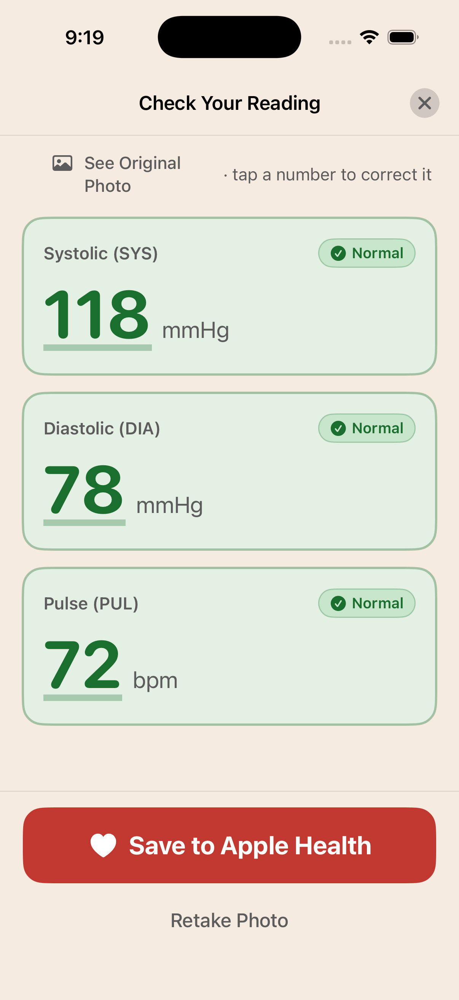
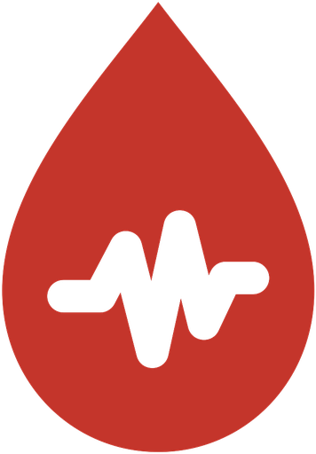

One Photo.
Logged.
Take a photo of your blood pressure monitor and Coraly does the rest. No typing, no notebook.
Free. Private. Calm.

The diastolic value is higher than the systolic, which isn’t physically possible. This usually points to a monitor misread. Please measure again.
The Normal, Elevated and High labels are based on general population guidelines and may not reflect what is healthy for you. Coraly does not provide diagnosis or treatment.
Know what your
numbers mean.
Calm, colour-coded severity. Every reading clearly labelled, so you know what it means at a glance.
Try it early onTestFlightWhat if Coraly misreads my monitor?
You’ll catch it. You always see the numbers next to the photo they came from before anything is saved. One tap corrects a digit, and impossible readings are flagged before they can scare you.
Is Coraly really free?
Yes. Photo logging, your full history, charts, reminders and Apple Health saving are free, with no ads, and will stay that way. If we ever add paid features, they will be additions, never things taken away.
Can Coraly take my blood pressure without a cuff?
No. No app can do that reliably, and Coraly will never pretend to. It logs readings from the validated monitor you already own. It never guesses numbers from your finger or your camera.
Which monitors does Coraly work with?
The one you already own. Coraly is designed to read arm and wrist monitors with a digital display, and detection keeps improving with every update. No pairing, no Bluetooth, nothing new to buy.
Where do my readings and photos go?
Nowhere. Readings live on your iPhone and in your Apple Health app. Photos are read on the device and never leave it unless you choose to send one to help improve accuracy. Read the full privacy policy.
Who makes Coraly?
One person. Hi 👋 I have to check my blood pressure every day as part of my own health routine, and I couldn’t find an app that was calm, beautiful, free and synced properly with Apple Health. So I built one.
Questions, feedback and feature requests are always welcome at support.coraly@gmail.com.
Your readings deserve
a calmer home.
Free. Private. Calm.

Coraly Try it early onTestFlight